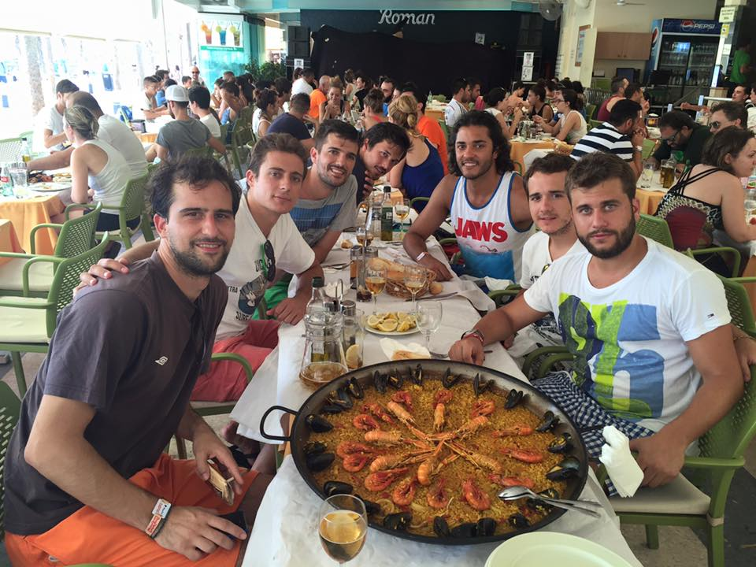
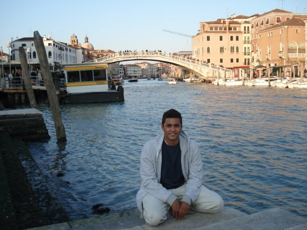
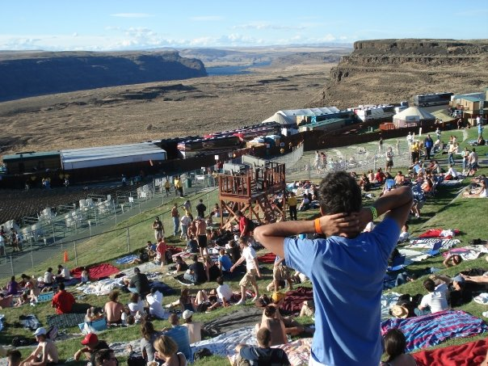
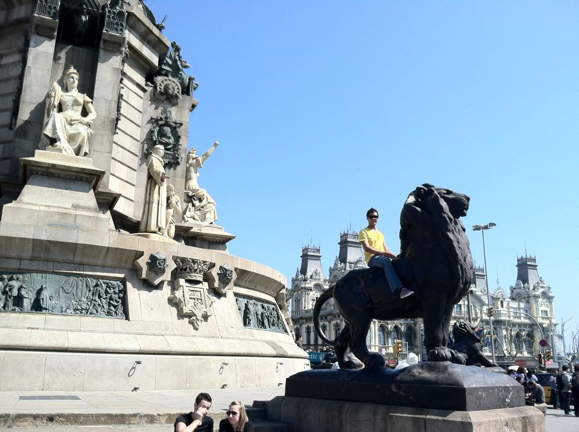
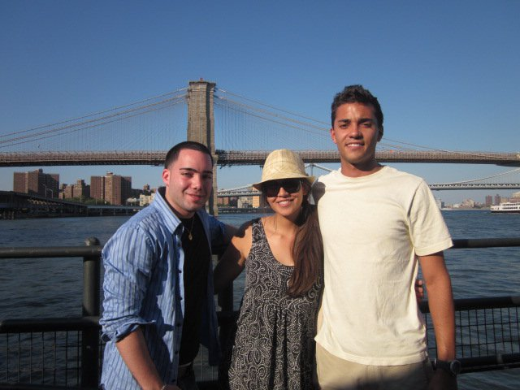

When not working or studying, I try to be active. My favorite sports are soccer and basketball, though my NBA aspirations fell short and Barcelona never responded to my KY Indoor highlights video. If you care, my teams are the University of Kentucky Wildcats, Green Bay Packers and unfortunately, the Cincinnati Reds.
I love to travel and visit my friends all around the world. My Duolingo app says I'm 70% fluent in Spanish. Here are some of my favorite pics:

Looking swoll at the Seven Sacred Pools in Maui
Keeping it classy at the 18th hole at St. Andrews
Scoping Edinburgh from the Rooftops

Post-ziplining over the jungle in Kona

Having some of my favorite food, paella with my boys in Spain

Checking out the Grand Canal in Venice

Taking in the scenery of a concert in Gorge, WA

Can't help it, I just love lions. They've got some big ones in Barcelona

Hanging with my cousin Cristina and my guy Matt in NYC
Watching the Cats play the Final Four in JerryWorld
Smoggy but sweet LA views from the Griffith Observatory
Kicking it on top of the Duomo in Florence
I also probably spend too much time keeping updated on pro sports in order to get an edge in my fantasy leagues so I can beat my friends. But if you're into that kinda stuff I do a pretty good job with it, so check out some of my blog posts for some killer advice.